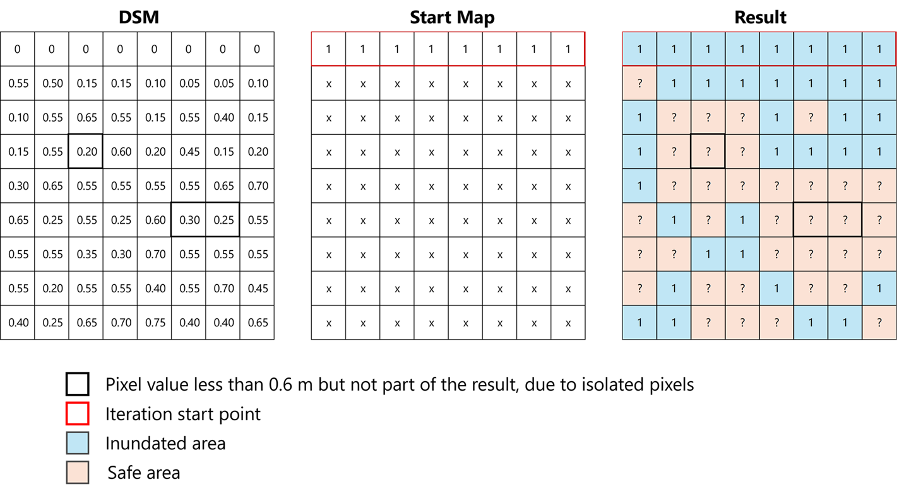

Tidal Flood (Rob) Simulation | Spatiality
Mon 15 Dec 2025 • 16:19 GMT by Spatiality
Shoreline Degradation Due to Tidal Inundation. Documentation by Spatiality
Simulating Rob inundation (tidal flooding caused by high tides or rising sea levels) in ILWIS (Integrated Land and Water Information System) essentially figure out which pieces of land are lower than the rising ocean water, and whether that water can actually reach them.
To run a realistic simulation, ILWIS needs two primary types of data: where the ground is and how high the water will get.
Digital Surface Model (DSM) is the absolute core data. It is a pixel-based map where every pixel contains a value showing the height of the ground above sea level. In Indonesia, researchers frequently use DEMNAS data because its high detail reveals exactly which neighborhoods or streets sit in low-lying depressions. For the detailed result, DSM generated from aerial mapping would be better.
Tidal Data & Sea Level Rise (SLR) Scenarios provide the water levels. Scientists look at historical high-tide records (specifically HHWL, or Highest High Water Level) and add predicted sea-level rise scenarios (e.g., what happens if the ocean rises by 25 cm, 50 cm, or 100 cm).
Land use / land cover maps (Optional but common). A map that show where the houses, fishponds, roads, and agricultural lands are. This helps scientists intersect the final flood map with real-world infrastructure to see what will actually get damaged.
Once it’s all set, I provide a hands-on workshop to all farmers on how to work with this app on their smartphone. At first they struggle on how to understand the basic concepts, but as they go practicing to map a field, they quickly catch the idea. Then begin to map and teach other farmer to do so.
How is the Simulation Performed?

Iteration Process for 0.6 m Tidal Inundation. Documentation by Spatiality
ILWIS relies heavily on Raster Maps (maps made up of a grid of tiny square pixels) and performs the simulation through a step-by-step mathematical recipe using its Map Calculation (MapCalc) tool and Scripts. Step 1: Setting the Water Height "Threshold"
First, input the target flood level. For example, if the normal highest tide is 150 cm and they want to simulate 50 cm of sea-level rise, the total water threshold is set to 200 cm. Step 2: The Map Formula (The "Bucket Fill" test).
Using ILWIS MapCalc, a formula is written that compares the water threshold against the ground elevation map (DEM). The basic mathematical logic looks like this:
- If the ground height is less than 200 cm, mark it as "Potential Flood".
- If the ground height is greater than 200 cm, mark it as "Safe".
Next, we have to perform the "Nearest Neighbor" Iteration (Testing Connectivity). This is where ILWIS does something very important. Just because a backyard is low-lying doesn't mean it will flood—there might be a hill or a seawall blocking the ocean from getting there.
ILWIS runs an iterative neighborhood operation. It starts at the coastline (where the ocean water is actively touching the land). It checks the neighboring pixels: "Are you lower than the water level? And are you touching a pixel that is already flooded?" If yes, the water "flows" into that pixel. The tool repeats (iterates) this check over and over across the map until the simulated water naturally stops spreading because it hit high ground.
Once the simulation stops running, ILWIS generates a new map showing the Inundation Extent (the boundaries of where the tidal water traveled) and the inundation depth (how deep the water is at any given spot, calculated by subtracting the ground height from the water height). By overlaying this final map onto a local neighborhood map, planners can accurately say, "If the sea rises by 50 cm, 30% of our local roads and residential areas will end up underwater during high tide."
Result

Tidal Inundation Result for 1 m Sea-Level Rise. Documentation by Spatiality